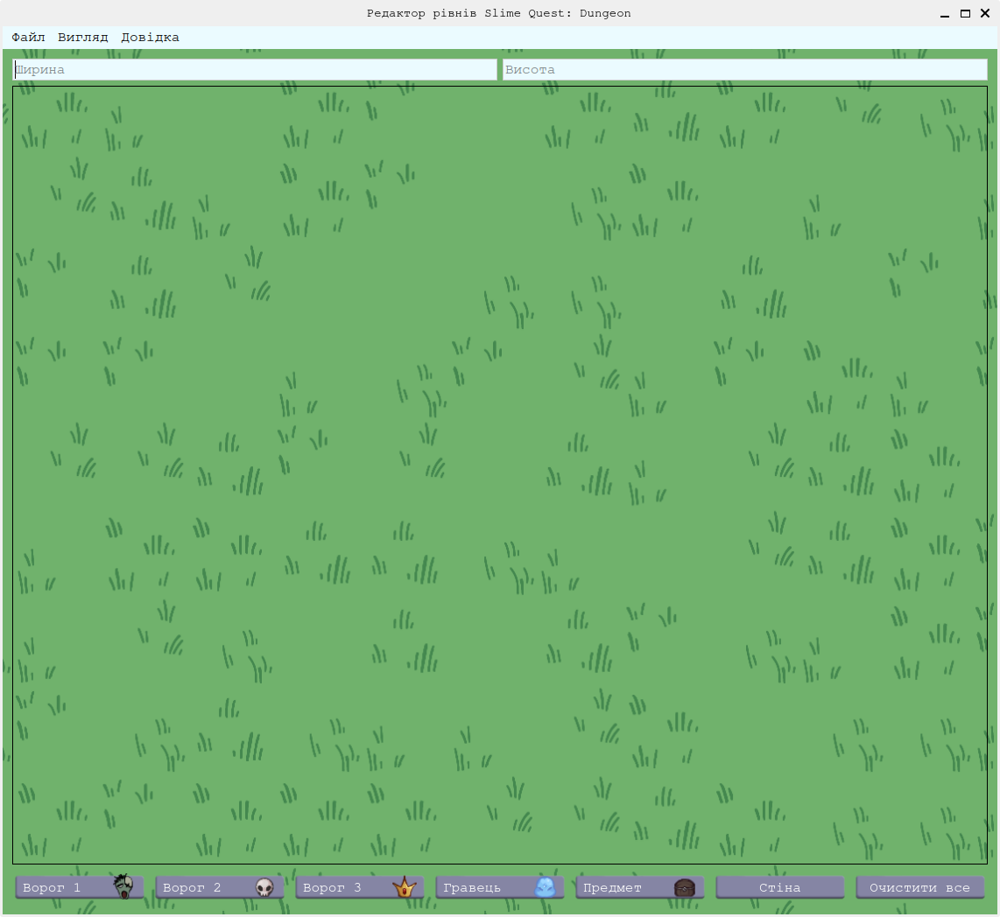
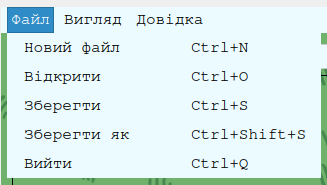
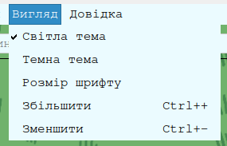
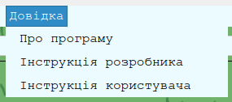
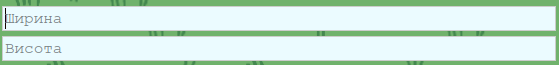
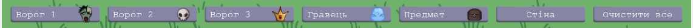

Вступ
Для роботи з редактором рівнів для гри «Slime Quest: Dungeon» необхідно запустити програму «Level editor SQD».
Опис графічного інтерфейсу

Відкривається головне вікно, яке мітить наступні елементи керування:
- меню програми, яке складається з пунктів «Файл», «Вигляд», «Довідка»;
- поля для введення розмірів мапи рівня;
- робочий простір майбутньої мапи;
- кнопки для вибору об’єктів та кнопка «Очистити все».
Меню «Файл» містить пункти для створення, відкриття, збереження та закриття файлів. За допомогою них можна створити новий файл, відкрити існуючий або зберегти поточний файл. Гарячі клавіші (скорочення) написані з правого боку кожного пункту.
Меню "Вигляд" налаштовує зовнішній вигляд програми, а саме темна чи світла тема, розмір шрифту та мапи.
Меню "Довідка" містить інформацію про програму, її версію та авторку. Тут заходиться інструкцію розробника та користувача.
Під головним меню розташовано два поля для вводу. В перше ви вводите ширину мапи, яку хочете створити, а в друге - висоту. Щоб мапа створилась після введення даних треба натиснути Enter.
У нижній частині інтерфейсу розташована панель інструментів, яка дозволяє вибрати об'єкти для розміщення на карті. Ви можете вибрати зомбі, скелета, боса рівня, гравця, скриню або стіну. Виділіть область на якій ви хочете розмістити об'єкт, а потім натисніть на відповідну кнопку знизу або відкрийте контекстне меню ПКМ(права кнопка миші) і оберіть об'єкт щоб розмістити його там.
Скорочення
- Ctrl + A - виділити всю карту
- Ctrl + C - скопіювати виділену область
- Ctrl + V - вставити скопійовану область
- Ctrl + X - вирізати виділену область
- Ctrl + N - створити новий файл
- Ctrl + O - відкрити існуючий файл
- Ctrl + S - зберегти поточний файл
- Ctrl + Shift + S - закрити поточний файл
- Ctrl + Q - вийти з програми
- Ctrl + + / Ctrl + колесо миші вгору - збільшити карту
- Ctrl + - / Ctrl + колесо миші вниз - зменшити карту
- 1 - поставити зомбі на виділену область
- 2 - поставити скелета на виділену область
- 3 - поставити боса рівня на виділену область
- 4 - поставити гравця на виділену область
- 5 - поставити скриню на виділену область
- 6 - поставити стіну на виділену область
- Backspace - очистити виділену область
Логіка об'єктів
Зомбі, скелет та бос є ворогами, які будуть атакувати гравця. Гравець - персонаж за якого буде грати користувач гри. Скриня - об'єкт з якого гравець зможе отримати різні предмети, які допоможуть йому в розвитку. Стіна - цільний блок через який не може проходити ні гравець, ні вороги.
Вирішення проблем
Якщо ви зіткнулися з проблемами під час використання програми, спробуйте наступні кроки:
- Для збереження файлу необхідно натиснути «Зберегти» або «Зберегти як» в меню «Файл» або Ctrl + S, Ctrl + Shift + S відповідно;
- Для того щоб відкрити файл необхідно натиснути «Відкрити» в меню «Файл» або Ctrl + O;
- Щоб в інструкціях були зображення, файл style.css та папка inst має бути в тій самій папці, що і програма;
- Щоб відкривались інструкції, необхідно щоб вони знаходились в одній папці з файлом програми;
- Якщо програма зависає або працює повільно, спробуйте перезапустити її або очистити кеш.